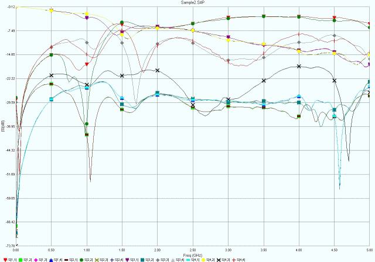

Welcome to SPChart Homepage¶
SPChart Overview¶
SPChart is free software to plot S-paramters. The motivation of developing this software is that I cannot find a free tools to do such things.
SPchart is still under developing and now it has such features:
- support SnP files from S1P upto S9P
- only support 4 port mixed mode s-paramters
- export chart to eps, emf, pdf, png, ps, svg format
- phase functions
- TDR(not applied in this version)
Pre-requirement¶
SPChart is base on Python, Numpy and Matplotlib. It is also compiled to exe file by py2exe and packaged to a insaller by Inno Setup.
If you want run SPChart as python script, please install python, numpy and matplotlib first, I recommand to use Python(x,y) package with everthing together. Otherwise, you can use compiled exe format without any libarays pre-installed.
SPChart was developed and tested on Windows XP platform only.
Evaluate the accuracy¶
SPview is commercial(not-free) software, can be use to compare with SPChart. Sample S4P file download.

Mixed Mode¶
Caculate from single-ended s-paramters, plot the magnitude in dB:
SPChart curves
SPview curves
